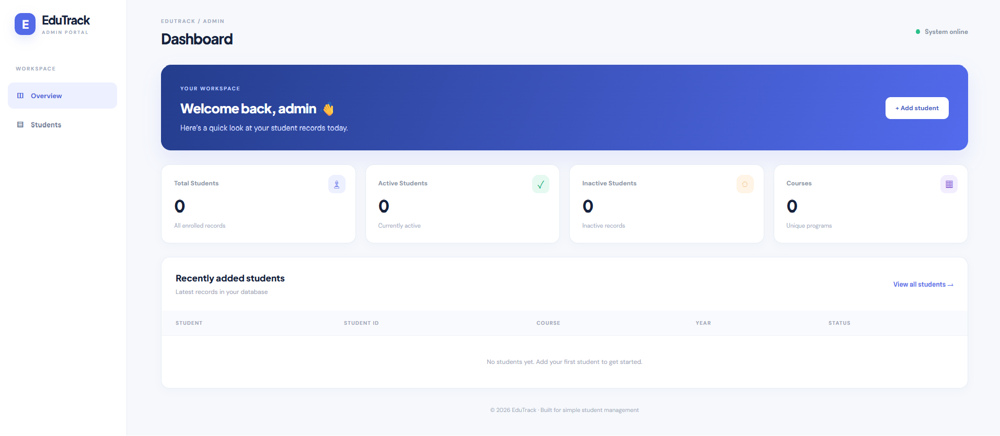
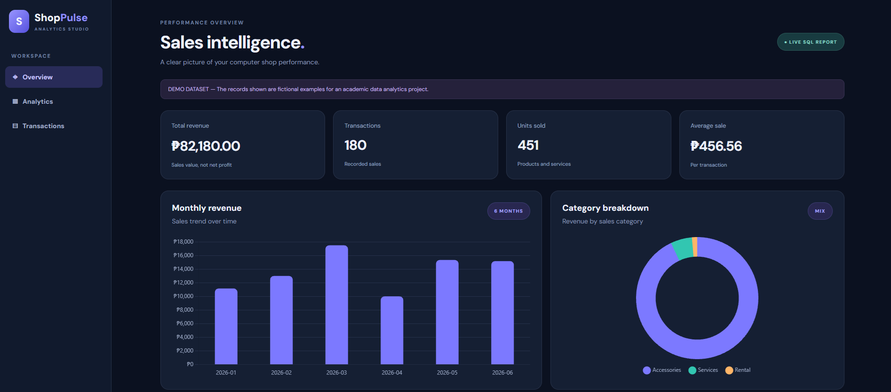
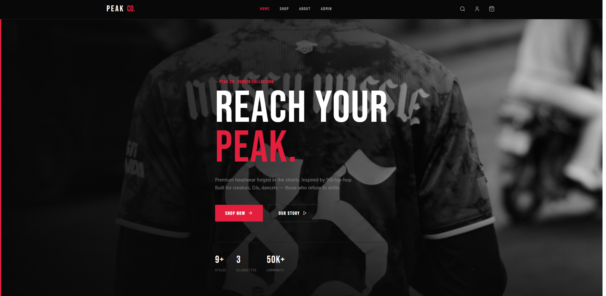
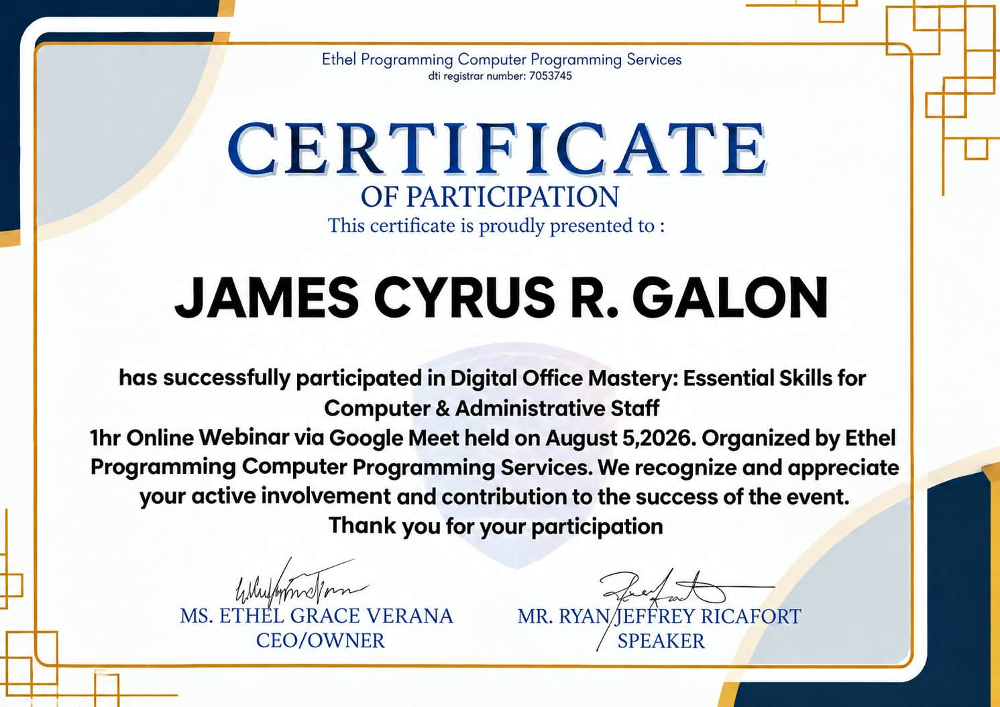
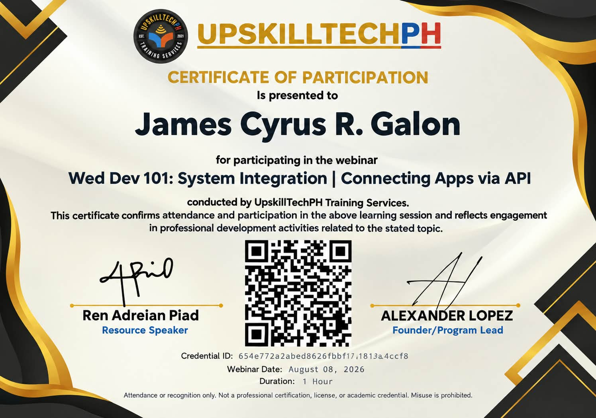
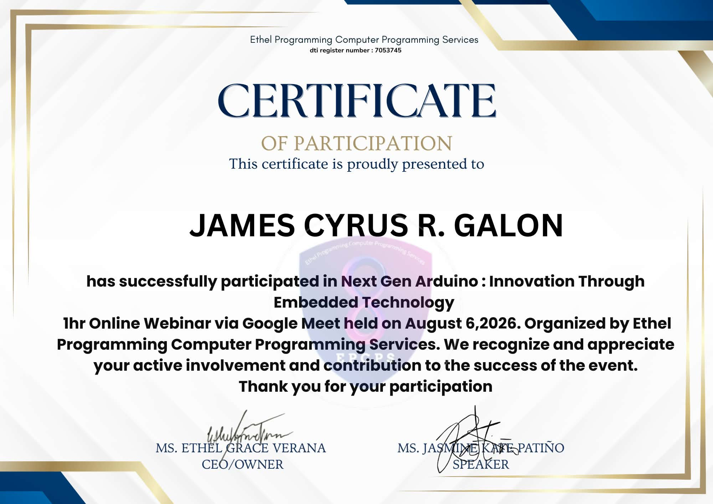
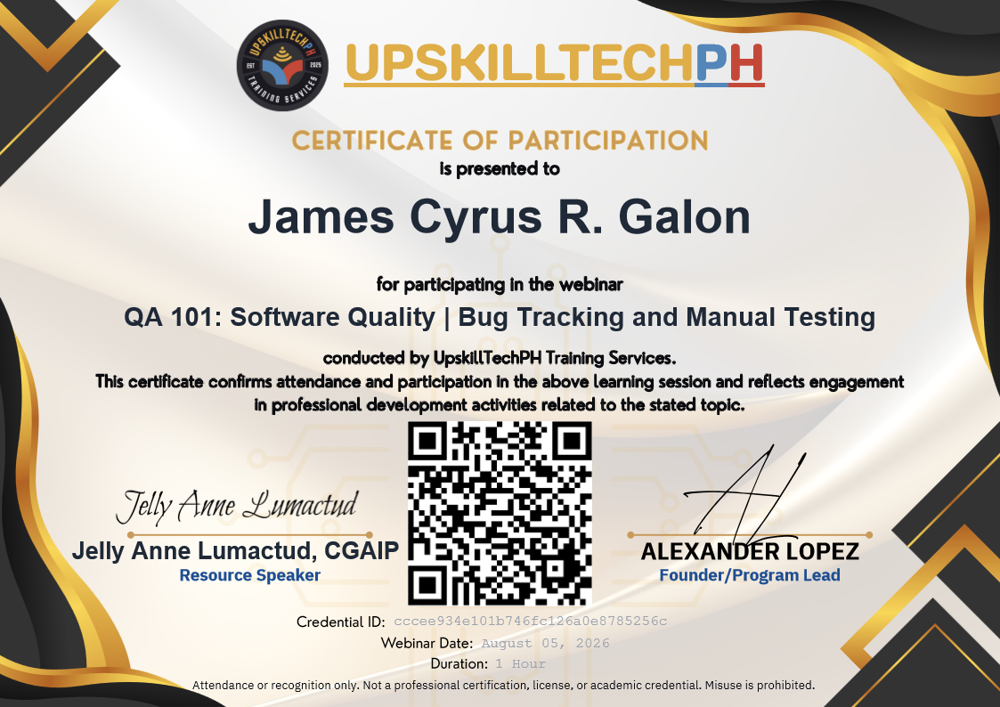

01
Network Administration
Learning how everything connects.
NETWORK
- 01TCP/IPCommunication
- 02DNSName resolution
- 03DHCPIP assignment
- 04FirewallsAccess control
Skill level Beginner
THE PERSON BEHIND THE CONNECTION
Aspiring Network Engineer |
Connecting systems. Solving problems.
Building my path into network engineering.
01 / PROFILE
Curious mind.
Connected thinking.
I am James Cyrus Galon, an aspiring network engineer with a background in IT. I am curious about how devices communicate and enjoy understanding what keeps people connected.
I am building my skills in network administration and troubleshooting, focusing on TCP/IP, DNS, DHCP, and firewalls. My next goal is an internship where I can learn from a team and put that knowledge into practice.
LEARNING
Building my foundation Networking fundamentals & continuous learningCURRENT FOCUS
Network administration TCP/IP · DNS · DHCP · FirewallsCAREER GOAL
Build reliable, secure networks Learn, contribute, iterateVALUES
Curiosity & care Clear communication · Ownership02 / TOOLKIT
My current toolkit and core skills, all at beginner level and growing through practice.
Learning how everything connects.
Skill level Beginner
The tools behind my day-to-day work.
Network & basic troubleshooting Technical documentation File management
Skill level Beginner
03 / SELECTED WORK
Three projects. Real interfaces. A growing toolkit.

View screenshot ↗Web application · Student records administration
A searchable student directory with a practical admin dashboard.
Student CRUD · Search by ID, name, email, or course · Enrollment statistics · Admin login · Form validation
Workflow: An administrator signs in, reviews student totals and recent records, and manages the student directory. PHP and MySQL handle storage and retrieval, with browser and server validation and duplicate-ID messages.
Implementation: The local source includes hashed passwords, session-based login, and CSRF checks for record deletion. The project is prepared for PHP/MySQL hosting on InfinityFree.
Team contribution: James Cyrus's specific responsibilities and collaboration outcomes are still to be confirmed.

View screenshot ↗Data analytics · Computer shop sales dashboard
Sales data turned into clear charts and searchable insights. Fictional academic dataset.
Sales KPIs · Monthly revenue chart · Category breakdown · Transaction search · SQL aggregations · Spreadsheet analysis
Workflow: MySQL stores the sample transactions, PHP calculates totals and grouped summaries, and Chart.js presents monthly revenue and category performance. The transaction table supports searches by item or category.
Analysis: The local project also includes an Excel workbook and CSV dataset for spreadsheet analysis. Revenue figures represent sales, not profit; cost and margin analysis are outside the supplied dataset.
Team contribution: James Cyrus's specific responsibilities and collaboration outcomes are still to be confirmed.

View screenshot ↗Website · Hosted on GitHub Pages
A bold headwear storefront with a distinct streetwear identity.
Brand presentation · Collection banner · Shop and About navigation · Visual identity
Design: The supplied homepage screenshot shows a headwear collection, a prominent Shop Now action, an Our Story link, and navigation for Home, Shop, About, and Admin. Checkout and account behavior have not been verified.
Team contribution: James Cyrus's specific responsibilities and lessons learned still need confirmation.
04 / ENGINEERING & DEFENSE
A learning focus on diagnosing technical problems and understanding security concepts, including SQL injection prevention.
IT TROUBLESHOOTING · TRAINING SCENARIOS
Practice examples showing a repeatable approach: verify the symptoms, isolate likely causes, make a controlled fix, and confirm the result. These are learning scenarios.
Verify symptomsConfirm whether only one device is affected and whether Wi-Fi or Ethernet is connected.
Isolate the causeCompare its IP address, gateway, and DNS settings with a working device. Check access to the gateway, then an external service.
Fix and confirmReconnect the adapter or correct confirmed network settings. Test browsing again and document the change.
Verify symptomsCheck the selected printer, its power and connection, and any displayed error.
Isolate the causeInspect the queue and compare printing from another application or device to identify whether the issue is local or shared.
Fix and confirmCancel the affected job with the user's agreement, resolve the printer error, and print a test page. Escalate a shared queue issue to its administrator.
Verify symptomsRecord the affected page, time, and steps that trigger the error. Check whether other pages are affected.
Isolate the causeReview server-side application logs and recent changes in an authorized development environment. Check configuration and dependent services.
Fix and confirmCorrect the identified error or revert the relevant change through the team's process. Retest the page and keep detailed errors out of public responses.
Verify symptomsAsk when the slowdown began and whether it affects one application or the whole computer.
Isolate the causeReview CPU, memory, disk usage, available storage, and recent installations. Check for pending updates and use approved security tools if needed.
Fix and confirmClose an identified unresponsive application after saving work, address the confirmed resource issue, and compare performance afterward.
Verify symptomsCheck the exact error, the affected account, and whether the service is available.
Isolate the causeConfirm the account identifier, keyboard settings, connection, and authentication requirements. Check lockout status through approved support channels.
Fix and confirmUse the official account recovery or unlock process after identity verification. Confirm access without requesting the user's password or bypassing authentication.
CYBERSECURITY · LEARNING FOCUS
SQL injection can occur when untrusted input changes the structure of a database query. Defensive development keeps user input separate from SQL instructions.
Use parameterized queries or prepared statements. Validate expected input types and use an allowlist for identifiers that cannot be parameterized.
Give application database accounts only the permissions they require. Keep detailed database errors in protected logs and show users a general error message.
Review how queries handle input, keep dependencies updated, and test defensive changes in an authorized practice environment. Record results and escalate concerns to the responsible team.
05 / INTERVIEW READINESS
Preparation topics for networking internships and entry-level IT roles.
Practice communicating clearly about teamwork, problem-solving, learning from mistakes, and professional readiness for an IT or networking internship.
Use these topics for self-assessment or a practice interview. No assessment result is claimed here.
A timed presentation framework to adapt to a future networking project and school requirements.
06 / EMPLOYABILITY
Give me a problem to work through, a team to learn from, and room to grow. I’m ready to turn networking fundamentals into hands-on experience.
Let’s talk opportunities ↗Know the network. TCP/IP · DNS · DHCP · Firewalls
Better together. Listen closely. Communicate clearly. Follow through.
Stay curious. Adapt, make time for practice, and keep asking why.
A place to start. Networking Intern · IT Support · Junior Network Engineer
Learn. Practice. Repeat. Stronger fundamentals, better troubleshooting, real team experience.
07 / CERTIFICATES & CREDENTIALS
Certificates of participation awarded to James Cyrus R. Galon for professional development webinars.

05 AUG 2026 / PARTICIPATION
Ethel Programming Computer Programming Services
One-hour online webinar via Google Meet.

08 AUG 2026 / PARTICIPATION
UpskillTechPH Training Services
One-hour webinar on system integration and connecting applications through APIs.
Credential ID: 654e772a2abed8626fbbf17.1813a4ccf8

06 AUG 2026 / PARTICIPATION
Ethel Programming Computer Programming Services
One-hour online webinar via Google Meet.

05 AUG 2026 / PARTICIPATION
UpskillTechPH Training Services
One-hour webinar. Speaker: Jelly Anne Lumactud, CGAIP.
Credential ID: cccee934e101b746fc126a0e8785256c
View certificate (PDF) ↗09 / AI LITERACY EVIDENCE
This log summarizes the portfolio work completed with ChatGPT/Codex in the available conversation. Compiled on October 28, 2026; dates below record when the work was documented.
| Date recorded | Task | AI assistance | My verification |
|---|---|---|---|
| Certificate records and evidence | Transcribed three participation certificates, read a QA webinar PDF, and identified that the two supplied PDFs were identical. | I supplied certificate images and PDF paths for James Cyrus. The titles, dates, recipient name, and credential IDs should receive a final comparison with the originals. | |
| Certificate image previews | Created a thumbnail from the QA certificate PDF and connected all four certificate images to clickable previews. | I requested visible pictures and saved the remaining images in the certificate folder. AI checked that all four image paths exist; a final browser review is still needed. | |
| Collaboration project cards | Built three responsive cards with Demo and Repository links, project screenshots, technology tags, and expandable notes. Descriptions use local source files and the supplied screenshots. | I supplied the layout reference, project URLs, repositories, and screenshots. Personal team contributions and live link behavior still need a final review. | |
| AI literacy evidence layout | Organized the visible conversation into an evidence table and four reflection cards using the supplied reference. | I requested this layout. The statements describe the available editing record; James Cyrus should review and personalize them before publication. |
AI helped update HTML, CSS, and JavaScript; organize certificate records; create clickable certificate previews; and prepare collaboration cards with space for project links and notes.
I provided the certificate evidence, supplied visual references, and confirmed that the image files had been saved. A final browser review of the updated sections and all project links has not been recorded.
This editing process showed why specific references and accessible source files matter. Images visible in chat still needed local files for the website, and duplicate PDFs needed checking before adding another record.
The certificate previews initially remained placeholders until local images were supplied. AI found similar certificates belonging to another person and left them unused. Project contributions, CV details, and personal reflections still need review and completion.
10 / CV
James Cyrus R. Galon · Information Technology
PROFILE & OBJECTIVE
Curious mind. Practical problem solver.
Motivated and detail-oriented, with a background in Information Technology and interests in data analysis, data visualization, and database management. Eager to apply analytical thinking and problem-solving skills, support business decisions, and learn new tools and technologies.
EDUCATION & EXPERIENCE
2027 — year listed in the supplied resume. School and graduation status are awaiting confirmation.
No formal work experience yet. Eager to gain practical experience and apply knowledge and skills developed through academic projects and coursework.
Resume available as a PDF.
Download resume (PDF)11 / CAREER DEVELOPMENT
A proposed development plan, with progress to be recorded as activities are completed.
01 / FOUNDATION
Review TCP/IP, IP addressing, subnetting, DNS, and DHCP. Aim to explain how a device communicates within a local network and beyond it.
02 / PRACTICE
Use guided networking exercises to practice configuration and diagnosis. Keep notes on the issue, observations, changes, and outcome.
03 / EVIDENCE
Collect completed exercise notes and verified learning records. Describe contributions clearly and seek feedback before adding evidence to the portfolio.
04 / OPPORTUNITY
Complete the CV, practice interview explanations, and pursue internships or entry-level IT support roles that offer exposure to network operations.
12 / ACADEMIC & CAREER REFLECTION
Reflection prompts for James Cyrus to complete with specific examples from his studies and practice.
CONNECT THEORY TO PRACTICE
Describe a networking concept from class, how it appeared in an exercise, and what helped you understand it. Include a concrete example rather than only naming the topic.
RECOGNIZE A LEARNING GAP
Identify a task that was difficult, explain what you tried, and choose a specific next exercise or source of feedback.
WORK WITH OTHERS
Reflect on a real group task: your responsibility, how you communicated, and what you would improve the next time.
PREPARE FOR THE NEXT STEP
Choose a practical goal linked to a networking internship. Record the intended action, a target date, and the evidence that will show progress.
13 / CONTACT
Have an internship, entry-level networking opportunity, or advice to share? I would be glad to connect.
LET US CONNECT
I am looking for a place to grow my networking skills, learn from experienced teammates, and contribute with curiosity and care.
Connect on LinkedIn ↗Reach out through my LinkedIn profile to start a conversation.